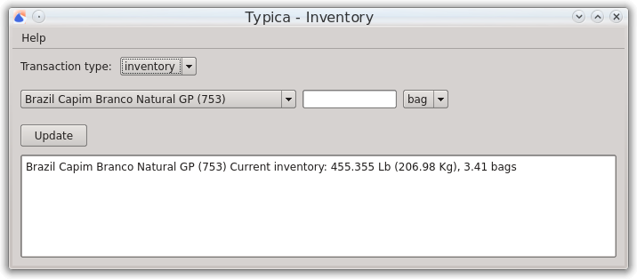
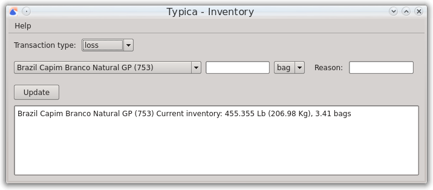

Update Inventory
The Update Inventory window allows the creation of two different transaction types. An inentory transaction replaces the amount of a specified green coffee in inventory with a new value. This is mainly useful after roasting the last batch from a bag of green coffee to set the inventory to a whole number of bags.
A loss transaction subtracts the specified amount of a green coffee from inventory and allows you to indicate a reason for that loss.